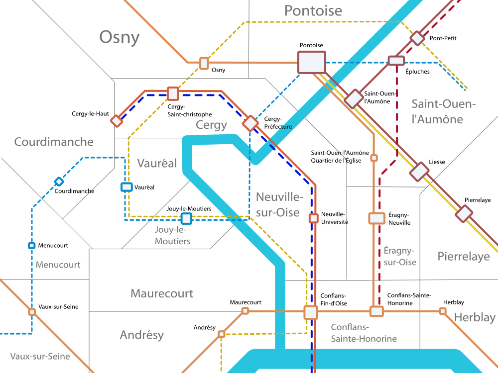

Cergy-Pontoise
Communes de Cergy, Pontoise, Saint-Ouen-l'Aumône


La ville nouvelle de Cergy-Pontoise est l'un des pôles les plus dynamiques de l'Île-de-France. Elle est le lieu d'implantation de nombreux établissements universitaires de haut niveau ainsi que de nombreuses entreprises travaillant sur des technologies de pointe.
Au niveau de la desserte en transport en commun, il y a un problème de fragmentation du réseau ferré: La dorsale qui dessert Cergy, la ligne de Cergy (principalement utilisée par le RER A et en plus transilien L et la tangentielle Yvelines), n'est pas reliée à Saint-Ouen-l'Aumône ni à la gare principale de Pontoise.
La création du nouveau réseau Cergyval est une proposition de solution à ce problème de connexité. Le Cergyval permettrait également de relier Cergy aux zones d'activité de Poissy et des Mureaux.
Pour les relation entre Cergy-Pontoise et les autres grand pôles de l'Île-de-France, le plan Ile-de-France propose deux liaisons tangentielles.
D'une part la tangentielle Yvelines qui irait de Cergy-le-Haut à Massy-Palaiseau et qui permettrait de relier Cergy aux pôles de Saint-Quentin-en-Yvelines, Versailles et de Massy-Palaiseau.
D'autre part la tangentielle Val-d'Oise qui irait de Conflans-Saint-Honorine à Meaux et qui permettrait de connecter la ville nouvelle à l'aéroport de Roissy, à la moitié est du Val-d'Oise et à l'est de l'Île-de-France.
La gare d'Épluches désenclavée par le Cergyval pourrait devenir le point d'arrêt grandes lignes de la ville nouvelle et être desservie par des TER en provenance de Normandie ou des TGV reliant Rouen à Lyon ou Strasbourg. Elle pourrait également être le terminus d'une desserte Lyria vers la Suisse via Marne-la-Vallée-Chessy et Roissy TGV.
Carte
{kind=link}

Cliquer pour agrandir